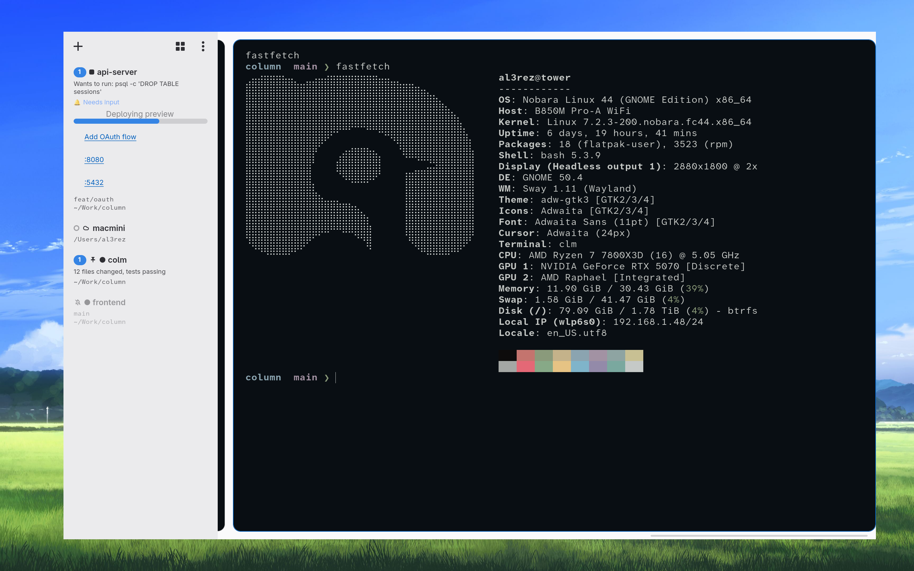

colm
The terminal for
A Linux workspace manager for coding agents, built on Ghostty. Workspaces live in a sidebar, terminals live in a horizontal column strip, and everything is scriptable over a JSON control socket.
FEATURES
- Workspace sidebar. Pin, mute, group, and drag-reorder workspaces. Each row shows task status, git branch, agent activity, and a live notification preview.
- Column strip. Terminals tile horizontally like niri. Split, zoom, and jump between columns without leaving the keyboard.
- Column overview. A native-style grid of live column thumbnails — search, click, or arrow-key to any tile in the active workspace.
- Agent aware. Permission prompts, exit plans, and questions from Claude Code and friends surface as cards you can answer from the feed sidebar.
- Remote workspaces. Attach whole workspaces to remote machines over SSH with tmux-backed persistence.
- Scriptable. Every window, workspace, and pane is addressable over a JSON-RPC unix socket — create, focus, split, close, snapshot.
- Ghostty core. GPU-accelerated rendering, fast startup, and the full Ghostty terminal engine underneath.
- Open source. MIT licensed, like the Ghostty it stands on.

INSTALL
git clone https://github.com/al3rez/colm cd colm zig build -Doptimize=ReleaseFast -p ~/.local/opt/colm
Requires Zig 0.15, GTK 4.16+, and libadwaita 1.5+.
FAQ
How is this different from Ghostty?
colm is a fork focused on managing many agent sessions at once: a workspace sidebar, a niri-style column strip, live overviews, and an automation socket. The terminal underneath is unmodified Ghostty.
Which platforms?
Linux with GTK 4 and libadwaita. Wayland and X11 both work.
Which agents?
Anything that runs in a terminal. Claude Code, Codex, OpenCode, aider — permission and plan prompts integrate with the feed when the agent supports it.
Is it free?
Yes. MIT licensed, no accounts, no telemetry.